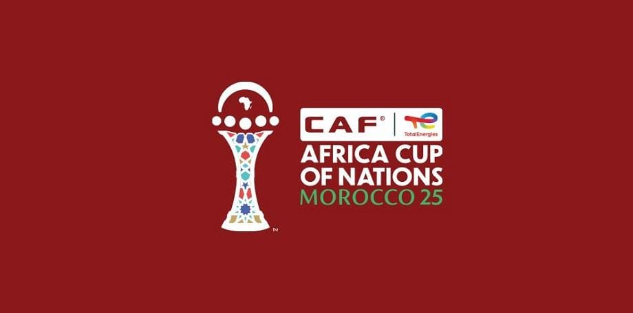

Coupe d’Afrique des Nations 2025
Édition organisée au Maroc 🇲🇦
Voir les stades

Présentation
La Coupe d’Afrique des Nations (CAN) est la plus grande compétition
de football en Afrique. L’édition 2025 aura lieu au Maroc.
🏆 Sélections nationales qualifiées – CAN 2025
- Maroc (pays hôte)
- Côte d’Ivoire
- Burkina Faso
- Égypte
- Algérie
- Angola
- RD Congo
- Cameroun
- énégal
- Guinée équatoriale
- Comores
- Gabon
- Nigeria
- Zambie
- Mali
- Zimbabwe
- Afrique du Sud
- Ouganda
- Botswana
- Bénin
- Soudan
- Tanzanie
- Mozambique
Stades principaux
Rabat
Stade principal – match d’ouverture et finale
Voir →
Tanger
Un des plus grands stades de la CAN
Voir →
Marrakech
Grand Stade moderne
Voir →